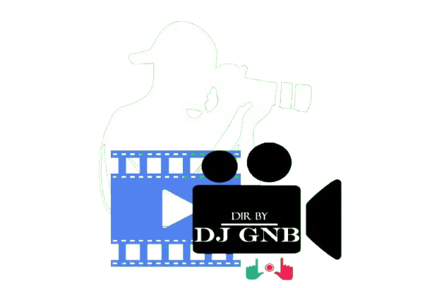

Intego ya Murikimpano
Murikimpano ni urubuga rwashyiriweho gufasha abanyempano bose, aho bava bakagera, kubona umwanya wo kwerekana no gusangiza isi yose ibihangano byabo. Twemera ko buri muntu afite impano idasanzwe, kandi intego yacu ni ugutanga ikibuga aho izo mpano zishobora kumurika, zigakundwa, kandi zigatera imbaraga abandi.
Icyo Dukora
Duha abahanzi, abanditsi, abanyamuziki, n'abandi banyabugeni bose uburyo bwo gushyiraho ibihangano byabo by'amashusho n'amajwi. Urubuga rwacu rworohereza buri wese kurema umwirondoro we, gucunga ibihangano bye, no guhura n'abandi bafite inyota yo kurema no guhanga udushya.
Ikipe yacu
